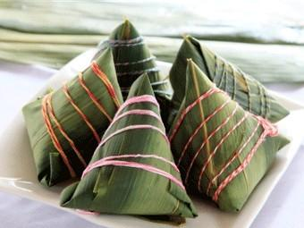

端午节的传统习俗

1.吃粽子
粽，即“粽籺”，俗称粽子，主要材料是糯米、馅料，用箬叶（或柊叶）包裹而成，形状多样，有尖角状、四角状等。粽子由来久远，最初是用来是祭祀祖先神灵的贡品。传入北方后，用黍米（北方产黍）做粽，称“角黍”。由于各地饮食习惯的不同，粽形成了南北风味；从口味上分，粽子有咸粽和甜粽两大类。端午食粽的风俗，千百年来在中国盛行不衰，已成了中华民族影响最大、覆盖面最广的民间饮食习俗之一，而且流传到朝鲜、日本及东南亚诸国。